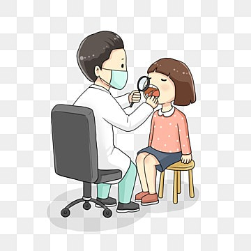
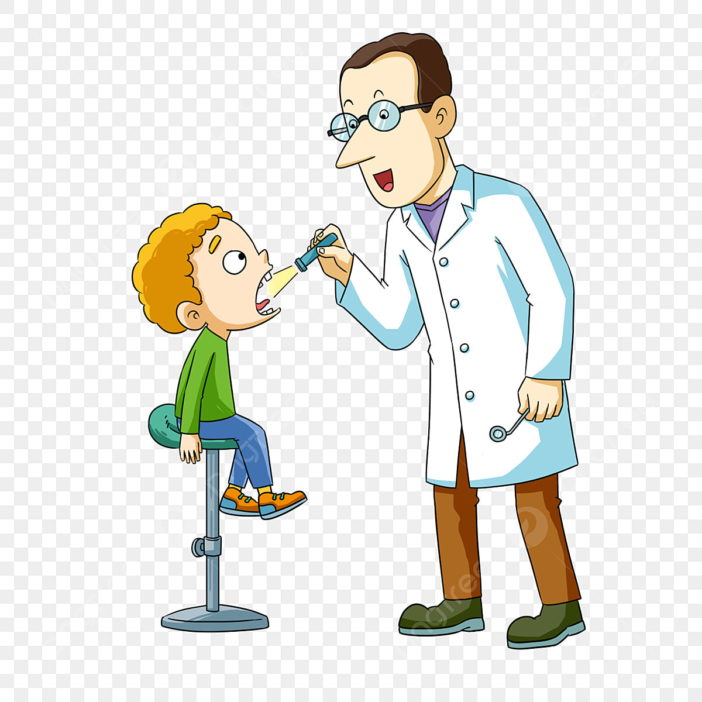

1.เสี่ยงมีปัญหาสุขภาพ การนั่งทำงานตลอดเวลาและต้องก้มดูช่องปากคนไข้ทำให้ทันตแพทย์หลายคนมีปัญหาเรื่องปวดคอ บ่า ไหล่และหลังเป็นประจำจากท่านั่งที่ไม่ถูกต้อง
2.รายได้ ถ้าหากหมอทำเฉพาะคลินิกอย่างเดียวก็จะทำให้ต้องทำงานหนักเพราะมีรายได้ทางเดียว
3.ต้องหมั่นเรียนรู้ตลอดชีวิตไม่มีหยุด เนื่องจากความรู้ทางทันตกรรมเป็นความรู้ที่มีการเปลี่ยนแปลงอยู่ตลอด ทำให้แม้จะเรียนจบไปแล้วก็ต้องเรียนรู้องค์ความรู้ใหม่ ๆ อยู่เสมอ หยุดอัพเดตตัวเองไม่ได้
|  |  |